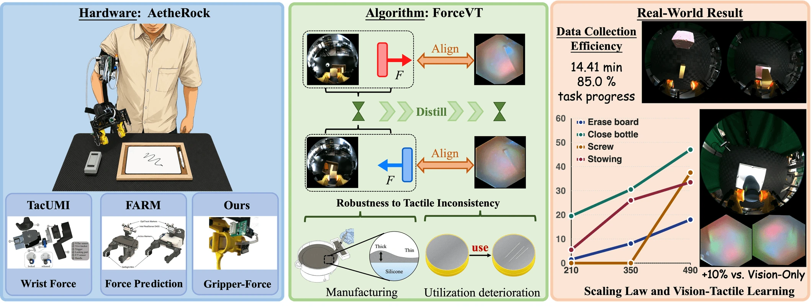
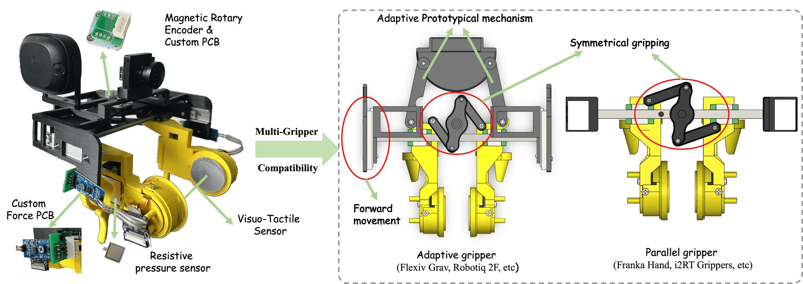
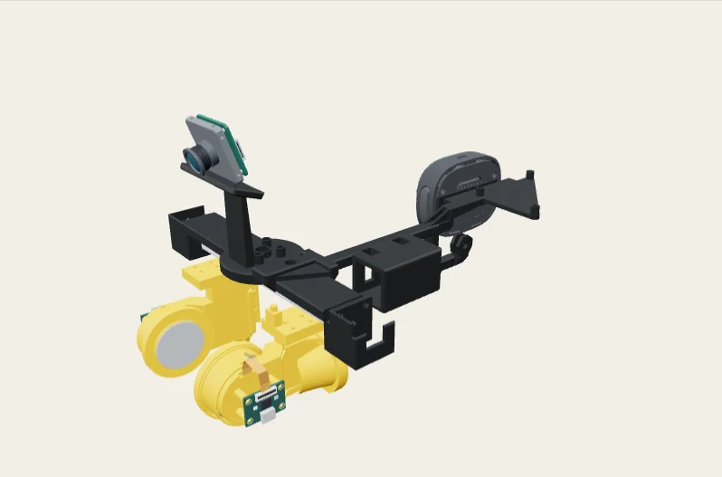
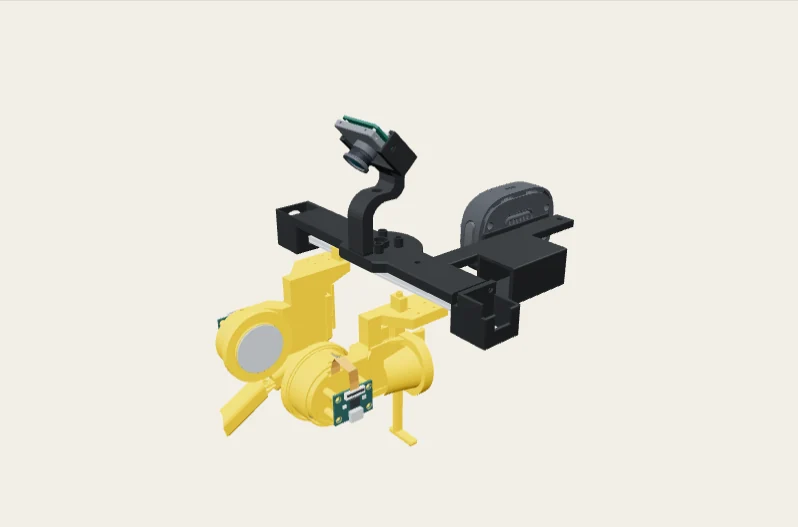
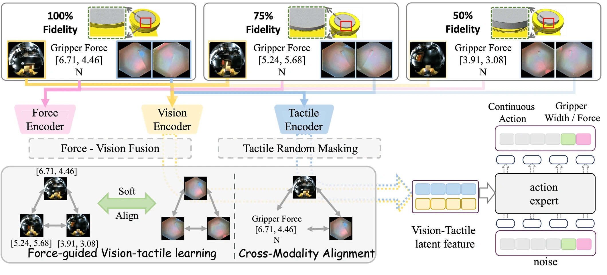
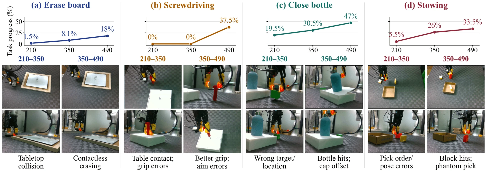
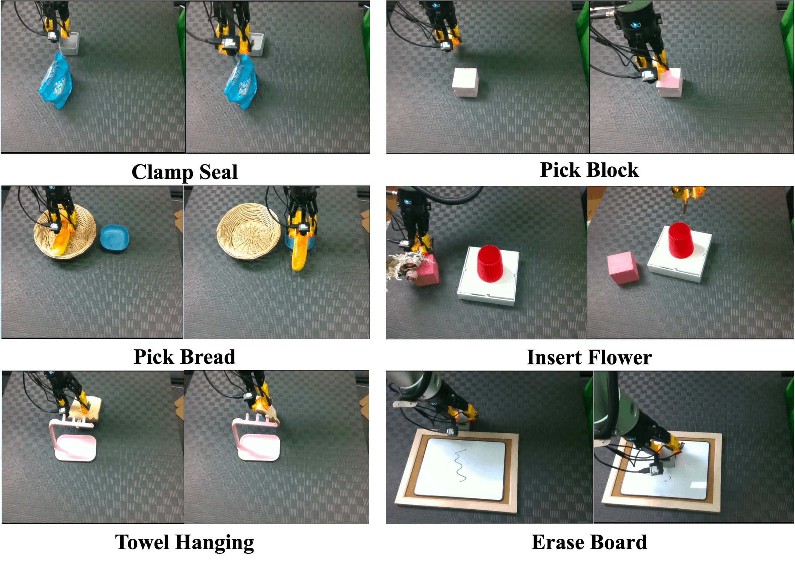
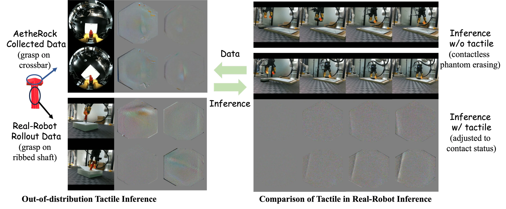

Collect multimodal demonstrations
AetheRock records gripper force, wrist-camera images, tactile observations, and motion through an arm-worn interface.
1 Shanghai Jiao Tong University 2 Ant Group 3 Shanghai Innovation Institute 4 Beijing Institute for General Artificial Intelligence (BIGAI)

A wearable collection system and a learning framework designed together for contact-rich manipulation.
AetheRock records gripper force, wrist-camera images, tactile observations, and motion through an arm-worn interface.
GelSlim-Mini combines planar acrylic, a PDMS elastomer, a silver-powder coating, and detachable components.
ForceVT uses force and vision as guidance for tactile representation learning, with masking and cross-modal alignment.
Force and tactile sensing are essential for contact-rich manipulation, but their integration into handheld or wearable devices is constrained by cost, size, and mechanical compatibility. Tactile signals also vary with manufacturing and wear. We introduce AetheRock, an arm-worn device that collects gripper-force, visual, and tactile data. It incorporates GelSlim-Mini, a modification of GelSlim 4.0 designed for low cost and easy manufacturing, and a resistive pressure sensor at the human finger contact area. We further propose ForceVT, which aligns multimodal representations and uses force and vision to guide tactile learning. Across four real-world tasks, ForceVT achieves 52.6% mean task progress, compared with 39.6% for VisTacLinear. On bottle closing, it maintains 57.0% and 53.0% task progress at 75% and 50% tactile fidelity, respectively, compared with 58.0% at full fidelity.
Mean task progress over VisTacLinear
across four contact-rich tasks
Mean drop at degraded tactile fidelities
on bottle closing
Reported GelSlim-Mini sensor cost
with detachable components
Finger-operated gripper control brings force, wrist vision, and tactile observations into the same demonstration.

Drag either jaw in the model or use the slider.

Drag to orbit, scroll or pinch to zoom, and click a part to identify it. Use the arrow keys to orbit when the view has focus.
The assembly STL shows the 90° clockwise AS5600 connector orientation. Assembly STL files preserve the assembled positions of the parts. All STL coordinates are in millimeters. The JLCEDA download contains the original PCB layout. The public STL uses exterior references for the Hikrobot wrist camera, VIVE Ultimate Tracker, and OV5647 tactile cameras.
The viewer uses HTC’s official VIVE Ultimate Tracker geometry. HTC model source
Each 22 × 22 mm fingertip film has a soldered lead pair routed to its voltage conversion module in the CAD. The wiring is a mechanical reference for a single force channel. The 4 × 4 array requires a matrix readout circuit for individual sensing points. Voltage conversion module listing
The Orange Pi 4 Pro model follows the V1.3.2 board drawing and prototype photos, with detailed connector openings, contacts, and visible components. Orange Pi board drawing
The Orange Pi 4 Pro tray carries a separate FUN-001 tactile pushbutton and a 10 mm diffused common-cathode RGB LED module. The STL parts use dimensions estimated from the prototype photos. Pushbutton listing · RGB LED listing
Two blue-and-white 5-position XH2.54 ribbon cables connect the U5 force ADC headers to U2 and U3 on the Orange Pi GPIO interconnect. Both front looms pass through the existing side openings, then the cables run inside the frame to the shared black braided sleeve. The earlier adaptive gripper STL uses the prior adapter revision. XH2.54 cable listing
The four-position AS5600 encoder ribbon connects CN1 on the encoder daughterboard to CN1 on the Orange Pi GPIO interconnect. It shares the braided sleeve with the force sensor ribbons and leaves a flexible section at the moving encoder mount.
The three-position pushbutton ribbon plugs into CN2 on the GPIO interconnect, and the four-position RGB LED ribbon plugs into CN3. Each ribbon terminates in individually soldered wires at the control module.
Drag either jaw in the model or use the slider.

Drag to orbit, scroll or pinch to zoom, and click a part to identify it. Use the arrow keys to orbit when the view has focus.
The V1 assembly was reconstructed from the original SolidWorks part files. The assembly STL includes camera and tracker fit references and assembly clearances for the rail and tactile housings. Dimensions are in millimeters. The interactive assembly uses HTC’s official VIVE Ultimate Tracker geometry.
Drag either jaw in the model or use the slider.

Drag to orbit, scroll or pinch to zoom, and click a part to identify it. Use the arrow keys to orbit when the view has focus.
V2 uses the component placements saved in the original SolidWorks assembly. The assembly STL includes camera and tracker fit references and assembly clearances for the rail and tactile housings. Dimensions are in millimeters. The interactive assembly uses HTC’s official VIVE Ultimate Tracker geometry.
GelSlim Mini uses planar acrylic and a PDMS-based sensing surface with silver powder. Its detachable sensor stack mounts on either the UMI collection gripper or the robot gripper.
Explore GelSlim MiniForceVT learns from tactile observations at different fidelities, using complementary modalities to guide the representation.

Spatial masking perturbs tactile observations from sensors with different fidelities, increasing the variation seen during training.
Fused force and vision features provide a training signal for the tactile encoder through soft alignment.
Alignment preserves relationships across modalities. Conditioned vision-tactile features then guide continuous action prediction.
Evaluation on a Flexiv Rizon-4 with a GN-01 gripper: 20 trials per model, at five object positions. Models are trained for 50,000 steps.
ForceVT reaches 52.6% mean task progress across four tasks, a 13.0 percentage-point gain over VisTacLinear.
| Method | Erase board | Screwdriving | Close bottle | Stowing | Average |
|---|---|---|---|---|---|
| Vision-only | 18.0 | 38.0 | 47.0 | 34.0 | 34.3 |
| VisTacLinear | 31.5 | 31.0 | 50.5 | 45.5 | 39.6 |
| TacFiLM | 5.5 | 36.5 | 39.0 | 43.5 | 31.1 |
| TactileConcat | 20.0 | 9.0 | 22.5 | 30.0 | 20.4 |
| ForceVT (ours) | 49.0 | 48.5 | 58.0 | 55.0 | 52.6 |
On bottle closing, ForceVT's mean drop is 3.0 pp, compared with 22.0 pp for VisTacLinear. This measures the average drop at 75% and 50% fidelity relative to the 100% reference.
| Method | 100% fidelity | 75% fidelity | 50% fidelity | Average | Mean drop (pp) ↓ |
|---|---|---|---|---|---|
| VisTacLinear | 50.5 | 30.5 | 26.5 | 35.8 | 22.0 |
| TacFiLM | 39.0 | 18.5 | 14.5 | 24.0 | 22.5 |
| TactileConcat | 22.5 | 15.5 | 18.0 | 18.7 | 5.8 |
| ForceVT (ours) | 58.0 | 57.0 | 53.0 | 56.0 | 3.0 |
Average includes all three fidelities. Mean drop includes only the two degraded fidelities. These robustness results are specific to the evaluated bottle-closing setting.
We evaluate 210, 350, and 490 demonstrations per task. Additional data improves task progress and is associated with more appropriate approach heights, better alignment, and fewer collisions in the observed rollouts.

Policies use wrist-camera images only. The collection study uses approximately 200 demonstrations per task.
| Task | Demonstrations | Collection time (min) | Task progress (%) |
|---|---|---|---|
| Clamp seal | 229 | 28.86 | 60.0 |
| Towel hanging | 206 | 27.60 | 47.5 |
| Pick bread | 199 | 17.16 | 64.5 |
| Erase board | 215 | 26.16 | 26.0 |
| Pick block | 214 | 14.41 | 85.0 |
| Insert flower | 212 | 24.72 | 22.0 |

Bread moving, clamp seal, and towel hanging. Original success and failure examples shown side by side.
Contact and alignment during bottle closing, with tactile observations alongside the robot views.
Grasping and placement examples illustrate how contact signals complement visual observations.
Clips retain the original 3× playback speed. These qualitative excerpts illustrate behavior; the tables above report aggregate evaluation.
Tactile sensing helps distinguish physical contact from visually similar, contactless actions. It also introduces a generalization challenge: a grasp on a crossbar during data collection can produce different tactile signals from a grasp on a ribbed shaft during inference.
